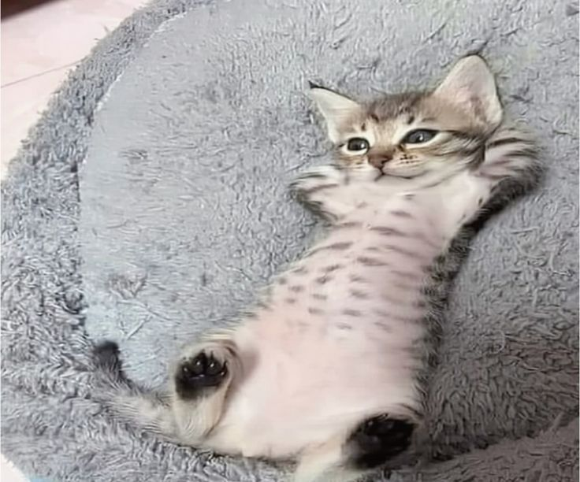

Рудий кіт Сімба

Сімба обожнює спати та їсти. Його улюблена їжа — риба та курка.
Все, що ви хотіли знати про котів та їхні звички

Наш сайт створений для справжніх любителів котів. Тут ви знайдете корисну інформацію про догляд, виховання та цікаві факти.
Сімба обожнює спати та їсти. Його улюблена їжа — риба та курка.

Клеопатра дуже незалежна та любить спостерігати за птахами з вікна.
Пізнавальне відео про звички та поведінку домашніх котів.
Більше відео на нашому YouTube каналі (відкриється в новій вкладці)
| Назва товару | Вага (г) | Ціна (грн) |
|---|---|---|
| Сухий корм з куркою | 400 | 120 |
| Вологий корм (пауч) | 85 | 25 |
| Паштет для кошенят | 100 | 30 |
| Сушена риба (ласощі) | 50 | 45 |
| Середня ціна за товар: | 55 грн | |
| День | Години прийому | Обідня перерва |
|---|---|---|
| Понеділок | 09:00 - 18:00 | 13:00 - 14:00 |
| Вівторок | 09:00 - 18:00 | |
| Середа | 09:00 - 18:00 | |
| Четвер | 09:00 - 18:00 | |
| П'ятниця | 09:00 - 17:00 | |
| Субота | 10:00 - 15:00 | Без перерви |
| Неділя | Вихідний | |